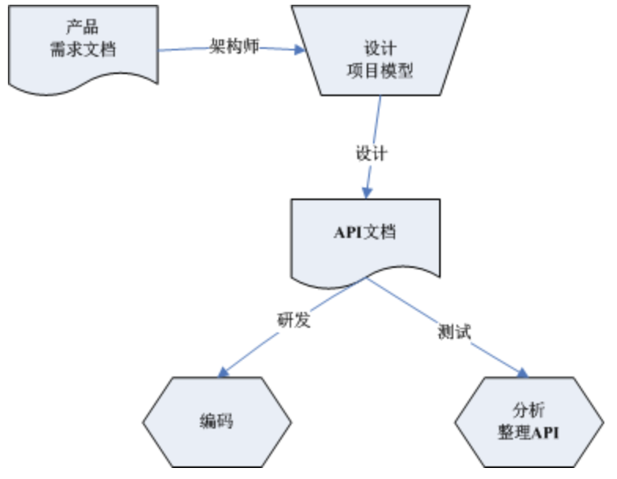
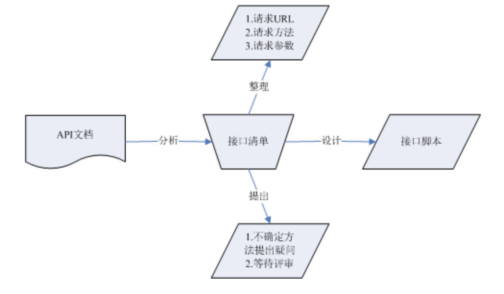

API文档分析
目标
- 学会看项目API文档
- 学会根据API文档整理出接口清单
- 学会对API文档中有不清楚的业务该如何在API接口清单内体现
为什么要分析API文档？
回顾
首先回顾下之前讲过的API文档由来和作用图
API文档由来：

API文档作用:

项目API文档下载
1. API文档解析：
1.1 href节点：
作用：href节：为资源的请求地址；-(请求资源集合时的请求地址要与**href相符**)
"href":" http://127.0.0.1:8000/api/departments/"
1.2 items节点：
作用：为服务器响应数据时返回的资源属性；
(请求接口时，返回的资源属性要与items里的属性相符)
"items": [
{
"href": "/T01",
"data": {
"dep_id": "T01",
"dep_name": "Test学院",
"master_name": "Test-Master",
"slogan": "Here is Slogan"
}
}
]
1.3 Links节点：
作用：为在当下资源下能连接到的直属下一资源
(比如：A资源直接包含或关联着B、C两个资源，如果访问到A资源时，Links应定为到B和C)
"links": [
{
"rel":"classes",
"href":"http://127.0.0.1:8000/api/departments/T01/classes/ ",
"prompt": "班级集合"
}
]
1.4 templates节点：
作用：为新增和更新资源时所需要的属性
(新增和更新资源时所需要的JSON报文属性)
"templates": {
"data": [
{
"dep_id": "T01",
"dep_name": "Test学院",
"master_name": "Test-Master",
"slogan": "Here is Slogan"
}
]
}
1.5 queries节点：
作用：为资源支持的查询列表参数名和查询条件
(资源支持哪些属性可以list查询;支持做查询条件的属性)
"queries": [
{
"rel": "search",
"href":" http://127.0.0.1:8000/api/departments/",
"prompt": "列表查询",
"data": [
{
"name": "$dep_id_list",
"value": ""
},
{
"name": “$dep_name_list”,
"value": ""
},
{
"name": "$master_name_list",
"value": ""
},
{
"name": "$slogan_list",
"value": ""
}
]
},
{
"rel": "condition",
"href":" http://127.0.0.1:8000/api/departments/",
"prompt": "条件查询（名称、简称）",
"data": [
{
"name": " dep_name",
"value": ""
},
{
"name": " master_name",
"value": ""
},
{
"name": " slogan",
"value": ""
}
]
}
]
1). 总结list列表查询
调用格式如：href/?$def_if_list=id1,id2
1. $dep_id_list
2. $dep_name_list
3. $master_name_list
4. $slogan_list
2). 总结条件查询
调用格式如：href/?dep_name=name&master_name=masterName&slogan=slogan
dep_name
master_name
slogan
(注：查询条件支持单个使用和组合使用)
1.6 error节点作用说明：
出现错误时，返回的报文格式和属性
(如果请求资源有误，在响应数据时应在error节内体现)
"error": {
"status_code": "",
"detail": ""
}
接口清单整理：
一、 接口清单(学院)示例：
一、查询
1.1学院-查询所有
请求方法：GET
请求地址：http://127.0.0.1:8000/api/departments/
1.2学院-查询指定
请求方法：GET
请求地址：http://127.0.0.1:8000/api/departments/T02/
（注：1为学院ID；）
1.3学院-List-$dep_id_list查询
请求方法：GET
请求地址：http://127.0.0.1:8000/api/departments/?$dep_id_list=T01,T02,T03
(注：$dep_id_list：为参数名称;T01,T02,T03为:学院ID;)
1.4学院-List-$master_name_list查询
请求方法：GET
请求地址：http://127.0.0.1:8000/api/departments/?$master_name_list=Java-Master,Test-Master
(注：$master_name_list：为参数名称;a,b,c为:院长名称;)
1.5学院-List-$slogan_list查询
请求方法：GET
请求地址：http://127.0.0.1:8000/api/departments/?$slogan_list=Here is Slogan
(注：$slogan_list：为参数名称;a,b,c为:学院口号;)
1.6学院-List-$dep_name_list
请求方法：GET
请求地址：http://127.0.0.1:8000/api/departments/?$dep_name_list=Test学院,Java2学院
(注：$dep_name_list为参数名称;Test学院为：学院名称;)
1.7学院-模糊 -BUG
请求方法：GET
请求地址：http://127.0.0.1:8000/api/departments/?blur=1&dep_name=C
(注:blur：为开启模糊查询参数1为开启；name：为参数名称；C：学院名称包含字符；)
1.8学院-组合
请求方法：GET
请求地址：http://127.0.0.1:8000/api/departments/?slogan=Here is Slogan&master_name=Test-Master&dep_name=Test学院
(注:dep_name：学院名称；master_name：为院长名称；slogan：学院口号；三个条件可随意组合或单独使用)
1.以上方法是否有遗漏？
答：
2.以上请求资源格式和参数格式是否正确？
答：
二、新增
2.1学院-新增
1) 请求方法：POST
2) 请求地址：http://127.0.0.1:8000/api/departments/
3) 请求JOSN报文：
4) 调用传入的json串如下（可新增多条，之间用,隔开）：
{
"data": [
{
"dep_id": "T01",
"dep_name": "Test学院",
"master_name": "Test-Master",
"slogan": "Here is Slogan"
}
]
}
1.以上请求新增资源URI是否正确？
答：
2.以上JSON报文格式是否正确？
答：
三、更新
3.1学院-更新
1). 请求方法：PUT
2). 请求地址：http://127.0.0.1:8000/api/departments/T03/
(注：1：为学院ID)
3). 请求JOSN报文：
{
"data": [
{
"dep_id": "T03",
"dep_name": "C++/学院",
"master_name": "C++-Master",
"slogan": "Here is Slogan"
}
]
}
1.以上更新资源URI是否正确？
答：
2.以上更新JSON报文格式和属性是否正确？
答：
四、删除
4.1学院-删除单个
请求方法：DELETE
请求地址：http://127.0.0.1:8000/api/departments/T03/
(注:10为学院ID)
4.2学院-删除多个
请求方法：DELETE
请求地址：http://127.0.0.1:8000/api/departments/?$dep_id_list=8,9,11
(注:$dep_id_list：为参数名称；8,9,11：为学院ID)
1.以上删除资源URI是否正确？
答：
2.以上删除方法是否有遗漏？
二、接口清单(班级)示例：
一、查询
1.1班级-查询所有
请求方法：GET
请求地址：http://127.0.0.1:8000/api/departments/T01/classes/
（注：T01：为班级ID）
1.2班级-查询指定
请求方法：GET
请求地址：http://127.0.0.1:8000/api/departments/T01/classes/2017T01C02/
（注：TO1：为班级ID；2017T01C02为班级ID；）
1.3班级-List-$cls_id_list查询
请求方法：GET
请求地址：http://127.0.0.1:8000/api/departments/T01/classes/?$cls_id_list=2017T01C03,2017T01C04
(注：T01:为班级ID；$cls_id_list：为参数名称;2017T01C03,2017T01C04为:班级ID;)
1.4班级-List-$master_name_list查询
请求方法：GET
请求地址：http://127.0.0.1:8000/api/departments/T02/classes/?$master_name_list=Master15,Master16
(注：T02：为班级ID；$master_name_list：为参数名称;Master15,Master16为:班主任名称;)
1.5班级-List-$cls_name_list查询
请求方法：GET
请求地址：http://127.0.0.1:8000/api/departments/T01/classes/?$cls_name_list=2017级Test学院T01班,2017级Test学院T02班
(注：T01：为班级ID;$cls_name_list：为参数名称;2017级Test班级T01班,2017级Test班级T02班为:班级名称;)
1.6班级-List-$slogan_list查询
请求方法：GET
请求地址：http://127.0.0.1:8000/api/departments/T02/classes/?$slogan_list=slogan15,slogan16
(注：T02：为班级ID;$slogan_list：为参数名称;slogan15,slogan16为:班级口号;)
1.7班级-组合
请求方法：GET
请求地址：http://127.0.0.1:8000/api/departments/T01/classes/?cls_name=2018级Test学院T01班&master_name=Master&slogan=sloganSlogan&dep_name=Test班级
(注:T01：学院ID；cls_name,master_name,dep_name：为参数名称；)
1.以上方法是否有遗漏？
答：
2.以上请求资源格式和参数格式是否正确？
答：
二、新增
2.1班级-新增
1) 请求方法：POST
2) 请求地址：http://127.0.0.1:8000/api/departments/T02/classes/
(T02:为学院ID)
3) 请求JOSN报文：
4) 调用传入的json串如下（可新增多条，之间用,隔开）：
{
"data": [
{
"cls_id": "2018T01C015",
"cls_name": "2018级Test学院T10班",
"master_name": "Master15",
"slogan": "slogan15"
}
]
}
1.以上请求新增资源URI是否正确？
答：
2.以上JSON报文格式是否正确？
答：
三、更新
3.1班级-更新
1). 请求方法：PUT
2). 请求地址：http://127.0.0.1:8000/api/departments/T01/classes/2017T01C05/
(注：T01：学院ID；2017T01C05：为班级ID)
3). 请求JOSN报文：
{
"data": [
{
"cls_id":"2017T01C05",
"dep_id":"T01",
"cls_name":"2018级Test学院T01班",
"master_name":"Master",
"slogan":"slogan"
}
]
}
1.以上更新资源URI是否正确？
答：
2.以上更新JSON报文格式和属性是否正确？
答：
四、删除
4.1班级-删除单个
请求方法：DELETE
请求地址：http://127.0.0.1:8000/api/departments/T01/classes/2018T01C08/
(注:T01：为学院ID；2018T01C08：为班级ID)
4.2班级-删除多个
请求方法：DELETE
请求地址：http://127.0.0.1:8000/api/departments/T01/classes/?$cls_id_list=2018T01C010,2018T01C011
(注:T01：学院Id；cls_id_list:为参数名称；2018T01C010,2018T01C011：为班级ID)
1.以上删除资源URI是否正确？
答：
2.以上删除方法是否有遗漏？
三、 接口清单(学生)示例:
一、查询
1.1学生-查询所有
请求方法：GET
请求地址：http://127.0.0.1:8000/api/departments/T01/classes/2017T01C01/students/
1.2学生-查询指定
请求方法：GET
请求地址：http://127.0.0.1:8000/api/departments/T01/classes/2017T01C01/students/2017T01C01001/
(注:TO1：学院ID；2017T01C01：班级Id；2017T01C01001：学生id)
1.3学生-List-$stu_id_list查询
请求方法：GET
请求地址：http://127.0.0.1:8000/api/departments/T01/classes/2017T01C01/students/?$stu_id_list=2017T01C01001,2017T01C010013
(注:TO1：学院ID；2017T01C01：班级Id；$stu_id_list：参数名称；2017T01C01001,2017T01C010013：学生id)
1.4学生-List-$stu_name_list查询
请求方法：GET
请求地址：http://127.0.0.1:8000/api/departments/T01/classes/2017T01C01/students/?$stu_name_list=张三,李四
(注:TO1：学院ID；2017T01C01：班级Id；$stu_name_list：参数名称；张三,李四：学生姓名)
1.5学生-条件
请求方法：GET
请求地址：http://127.0.0.1:8000/api/departments/T01/classes/2017T01C01/students/?stu_name=学生姓名
(注:TO1：学院ID；2017T01C01：班级Id；stu_name：参数名称；学生姓名：参数值（学生姓名）)
1.以上方法是否有遗漏？
答：
2.以上请求资源格式和参数格式是否正确？
答：
二、新增
2.1学生-新增
1) 请求方法：POST
2) 请求地址：http://127.0.0.1:8000/api/departments/T01/classes/2017T01C01/students/
(注:TO1：学院ID；2017T01C01：班级Id；)
3) 请求JOSN报文：
4) 调用传入的json串如下（可新增多条，之间用,隔开）：
{
"data": [
{
"stu_id": "2017T01C01002",
"stu_name": "王二New",
"gender": "0",
"birthday": "2018-01-01",
"native": "北京",
"phone_number": "",
"address": "",
"zipcode": "",
"email": "",
"note": ""
}
]
}
1.以上请求新增资源URI是否正确？
答：
2.以上JSON报文格式是否正确？
答：
三、更新
3.1学生-更新
1). 请求方法：PUT
2). 请求地址：http://127.0.0.1:8000/api/departments/T01/classes/2017T01C01/students/2017T01C01001/
(注:TO1：学院ID；2017T01C01：为班级Id；班级Id；2017T01C01001：学生id)
3). 请求JOSN报文：
{
"data": [
{
"stu_id":"2017T01C01001",
"dep_id":"T01",
"cls_id":"2017T01C01",
"stu_name":"王二",
"gender":false,
"birthday":"2018-01-01",
"native":"北京",
"phone_number":"",
"address":"",
"zipcode":"",
"email":"",
"note":""
}
]
}
1.以上更新资源URI是否正确？
答：
2.以上更新JSON报文格式和属性是否正确？
答：
四、删除
4.1学生-删除单个
请求方法：DELETE
请求地址：http://127.0.0.1:8000/api/departments/T01/classes/2017T01C01/students/2017T01C010016/
(注:TO1：学院ID；2017T01C01：为班级Id；2017T01C010016：学生id)
1.以上删除资源URI是否正确？
答：
2.以上删除方法是否有遗漏？